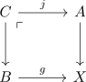
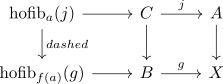

homotopy excision theorem for CW complexes
Proposition
Let $(C,A), (C,B)$ be CW Pairs where the inclusion $\iota_A,\iota_B$ are \(n\) resp. \(m\) connected maps

Then for all $a \in A$ the map
\begin{align*}
\mathrm{hofib}_{j} & \mathrm{hofib}_{f(a)}(g)
\end{align*}
is \(n+m-\) connected

Proof
corollary of: